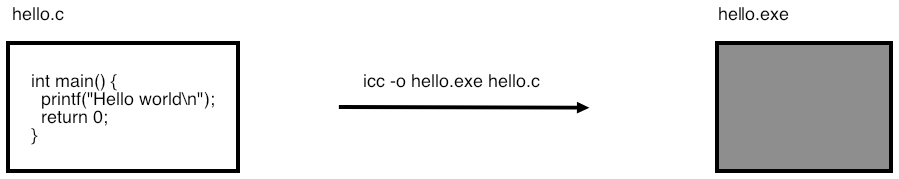
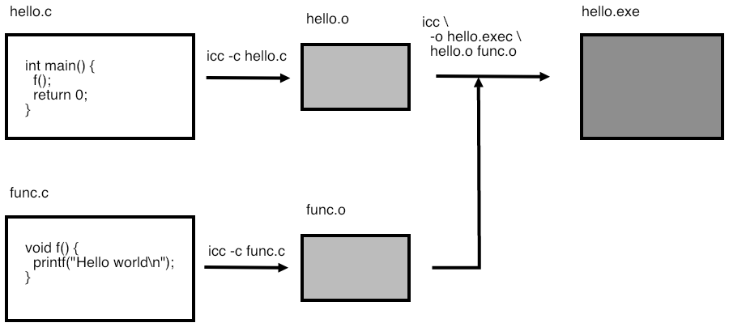
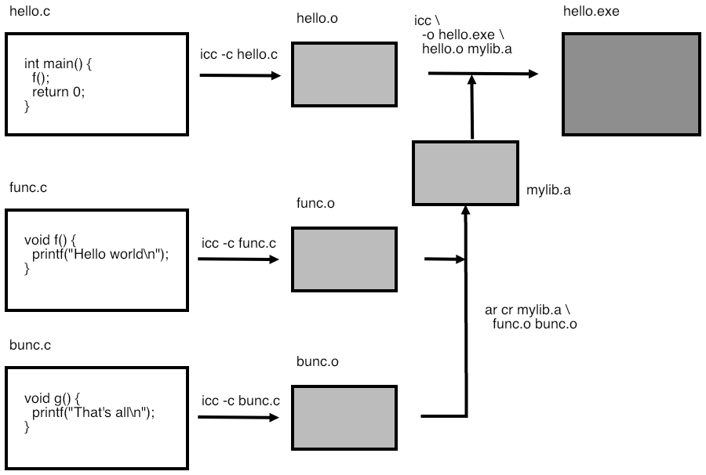

crumb trail: > compile > File types in programming
In this section you will be introduced to the different types of files that you encounter while programming.
crumb trail: > compile > File types in programming > Introduction to file types
Your file system has many files, and for purposes of programming we can roughly divide them into `text file', which are readable to you, and `binary files', which are not meaningfully readable to you, but which make sense to the computer.
The unix command file can tell you what type of file you are dealing with.
$$ file README.txt README.txt: ASCII text $$ mkdir mydir $$ file mydir mydir: directory $$ which lsThis command can also tell you about binary files. Here the output differs by operating system.
$$ which ls /bin/ls # on a Mac laptop: $$ file /bin/ls /bin/ls: Mach-O 64-bit x86_64 executable # on a Linux box $$ file /bin/ls /bin/ls: ELF 64-bit LSB executable, x86-64Apply the file command to sources for different programming language. Can you find out how file figures things out?
In figure 23.1 you find a brief summary of file types. We will now discuss them in more detail.
| Text files | |
| Source | Program text that you write |
| Header | also written by you, but not really program text. |
| Binary files | |
| Object file | The compiled result of a single source file |
| Library | Multiple object files bundled together |
| Executable | Binary file that can be invoked as a command |
| Data files | Written and read by a program |
FIGURE 23.1: Different types of files
crumb trail: > compile > File types in programming > About `text' files
Readable files are sometimes called text file s; but this is not a concept with a hard definition. One not-perfect definition is that text files are ascii files, meaning files where every byte uses `7-bit ascii': the first bit of every byte is zero.
This definition is incomplete, since modern programming languages can often use unicode , at least in character strings. (For a tutorial on ascii and unicode, see chapter 6 of [Eijkhout:TeXscience] .)
crumb trail: > compile > File types in programming > Source versus program
There are two types of programming languages:
Examples of interpreted languages are Python , Matlab , Basic , Lisp . Interpreted languages have some advantages: often you can write them in an interactive environment that allows you to test code very quickly. They also allow you to construct code dynamically, during runtime. However, all this flexibility comes at a price: if a source line is executed twice, it is translated twice. In the context of this book, then, we will focus on compiled languages, using C and Fortran as prototypical examples.
So now you have a distinction between the readable source code, and the unreadable, but executable, program code. In this tutorial you will learn about the translation process from the one to the other. The program doing this translation is known as a compiler . This tutorial will be a `user manual' for compilers, as it were; what goes on inside a compiler is a different branch of computer science.
crumb trail: > compile > File types in programming > Binary files
Binary files fall in two categories:
Data files can be really anything: they are typically output from a program, and their format is often specific to that program, although there are some standards, such as hdf5 . You get a binary data file if you write out the exact bytes of certain integers or floating point numbers, rather than a readable representation of that number.
Why don't programs write their results to file in readable form?How do you write/read a binary file in C and Fortran? Use the function hexdump to make sense of the binary file. Can you generate the file from Fortran, and read it from C? (Answer: yes, but it's not quite straightforward.) What does this tell you about binary data?
In this tutorial you will mostly be concerned with executable binary files. We then distinguish between:
Object files come from the fact that your source is often spread over multiple source files, and these can be compiled separately. In this way, an object file , is a piece of an executable: by itself it does nothing, but it can be combined with other object files to form an executable.
If you have a collection of object files that you need for more than one program, it is usually a good idea to make a library form an executable. Often, libraries are written by an expert and contain code for specialized purposes such as linear algebra manipulations. Libraries are important enough that they can be commercial, to be bought if you need expert code for a certain purpose.
You will now learn how these types of files are created and used.
crumb trail: > compile > Simple compilation
In this section you will learn about executables and object files.
crumb trail: > compile > Simple compilation > Compilers
Your main tool for turning source into a program is the compiler . Compilers are specific to a language: you use a different compiler for C than for Fortran. You can also have two compilers for the same language, but from different `vendors'. For instance, while many people use the open source gcc or clang compiler families, companies like Intel and IBM offer compilers that may give more efficient code on their processors.
crumb trail: > compile > Simple compilation > Compile a single file

FIGURE 23.2: Compiling a single source file
Let's start with a simple program that has the whole source in one file.
File: compile/c/hello.c
Compile this program with your favorite compiler; we will use gcc in this tutorial, but substitute your own as desired.
On TACC clusters, the Intel compiler icc is preferred.As a result of the compilation, a file a.out is created, which is the executable.
%% gcc hello.c %% ./a.out hello worldYou can get a more sensible program name with the -o option:
%% gcc -o helloprog hello.c %% ./helloprog hello worldThis process is illustrated in figure 23.2 .
crumb trail: > compile > Simple compilation > Multiple files: compile and link

FIGURE 23.3: Compiling a program from multiple source files
Now we move on to a program that is in more than one source file.
Main program: fooprog.c
// fooprog.c
extern void bar(char*);
int main() {
bar("hello world\n");
return 0;
}
Subprogram: foosub.c
// foosub.c
void bar(char *s) {
printf("%s",s);
return;
}
As before, you can make the program with one command.
However, you can also do it in steps, compiling each file separately and then linking them together. This is illustrated in figure 23.3 .
The -c option tells the compiler to compile the source file, giving an object file . The third command then acts as the linker , tieing together the object files into an executable. (With programs that are spread over several files there is always the danger of editing a subroutine definition and then forgetting to update all the places it is used. See the `make' tutorial, section tut:gnumake , for a way of dealing with this.)
Exercise for separate compilation. Structure:
Main program: fooprog.c \strippedinput{code/compile/}{fooprog.c}Subprogram: foosub.c \strippedinput{code/compile}{foosub.c} Add a second subroutine in a second file.
What files are being produced each time?
Can you write a shell script to automate this?
crumb trail: > compile > Simple compilation > Looking into binary files: nm
Most of a binary file consists of the same instructions that you coded in C or Fortran, just in machine language, which is much harder to understand. Fortunately, you don't need to look at machine language often. What often interests you about object files is what functions are defined in it, and what functions are used in it.
For this, we use the nm command.
Each object file defines some routine names, and uses some others that are undefined in it, but that will be defined in other object files or system libraries. Use the nm command to display this:
[c:264] nm foosub.o 0000000000000000 T _bar U _printfLines with T indicate routines that are defined; lines with U indicate routines that are used but not define in this file. In this case, printf is a system routine that will be supplied in the linker stage.
Sometimes you will come across stripped binary file, and nm will report No symbols . In that case nm -D may help, which displays `dynamic symbols'.
crumb trail: > compile > Simple compilation > Compiler options and optimizations
Above you already saw some compiler options :
There are many other options, some of them a de facto standard, and others specific to certain compilers.
crumb trail: > compile > Simple compilation > Compiler options and optimizations > Symbol table inclusion
The -g option tells the compiler to include the table} in the binary. This allows you to use an interactive debugger (section tut:debug ) since it relates machine instructions to lines of code, and machine addresses to variable names.
crumb trail: > compile > Simple compilation > Compiler options and optimizations > Optimization level
Compilers can apply various levels of optimization to your code. The typical optimization levels are specified as -O0 `minus-oh-zero', -O1 , -O2 , -O3 . Higher levels will typically give faster execution, as the compiler does increasingly sophisticated analysis on your code.
The following is a fairly standard set of options:
icc -g -O2 -c myfile.cAs an example, let's look at Given's rotations :
// rotate.c
void rotate(double *x,double *y,double alpha) {
double x0 = *x, y0 = *y;
*x = cos(alpha) * x0 - sin(alpha) * y0;
*y = sin(alpha) * x0 + cos(alpha) * y0;
return;
}
Use the optimization report facility of your compiler to see what other optimizations are applied. One of them is a good lesson in benchmark design!
Many compilers can generate a report of what optimizations they perform.
| compiler | reporting option |
| clang | -Rpass=.* |
| gcc | -fopt-info |
| intel | -qopt-report |
Generally, optimizations leave the semantics of your code intact. (Makes kinda sense, not?) However, at higher levels, usually level 3, the compiler is at liberty to make transformations that are not legal according to the language standard, but that in the majority of cases will still give the right outcome. For instance, the C language specifies that arithmetic operations are evaluated left-to-right. Rearranging arithmetic expressions is usually safe, but not always. Be careful when applying higher optimization levels!
crumb trail: > compile > Libraries
In this section you will learn about libraries.

FIGURE 23.4: Compiling a single source file
If you have written some subprograms, and you want to share them with other people (perhaps by selling them), then handing over individual object files is inconvenient. Instead, the solution is to combine them into a library.
crumb trail: > compile > Libraries > Static libraries
First we look at static libraries , for which the archive utility ar is used. A static library is linked into your executable, becoming part of it. This may lead to large executables; you will learn about shared libraries next, which do not suffer from this problem.
The use of a library to build a program is illustrated in figure 23.4 .
Create a directory to contain your library (depending on what your library is for this can be a system directory such as /usr/bin ), and create the library file there.
The nm command tells you what's in the library, just like it did with object files, but now it also tells you what object files are in the library:
%% nm ../lib/libfoo.a ../lib/libfoo.a(foosub.o): 00000000 T _bar U _printfThe library can be linked into your executable by explicitly giving its name, or by specifying a library path:
crumb trail: > compile > Libraries > Shared libraries
Although they are somewhat more complicated to use, shared libraries have several advantages. For instance, since they are not linked into the executable but only loaded at runtime, they lead to (much) smaller executables. They are not created with ar , but through the compiler. For instance:
You can again use nm :
%% nm ../lib/libfoo.so ../lib/libfoo.so(single module): 00000fc4 t __dyld_func_lookup 00000000 t __mh_dylib_header 00000fd2 T _bar U _printf 00001000 d dyld__mach_header 00000fb0 t dyld_stub_binding_helperShared libraries are not actually linked into the executable; instead, the executable needs the information where the library is to be found at execution time. One way to do this is with LD_LIBRARY_PATH :
Another solution is to have the path be included in the executable:
%% gcc -o foo fooprog.o -L../lib -Wl,-rpath,`pwd`/../lib -lfoo %% ./foo hello worldThe link line now contains the library path twice:
Use the command ldd to get information about what shared libraries your executable uses. (On Mac OS X, use otool -L instead.)